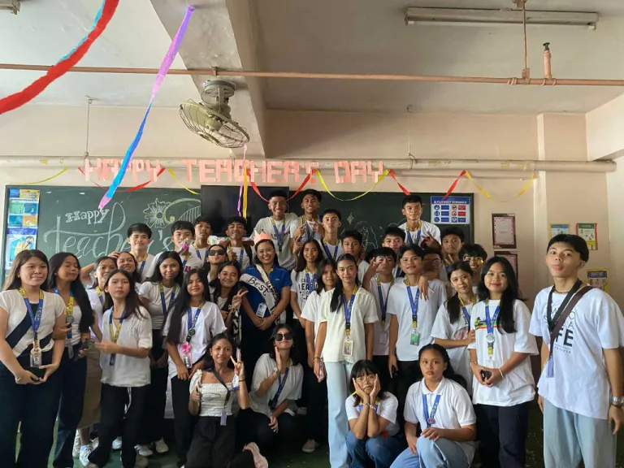
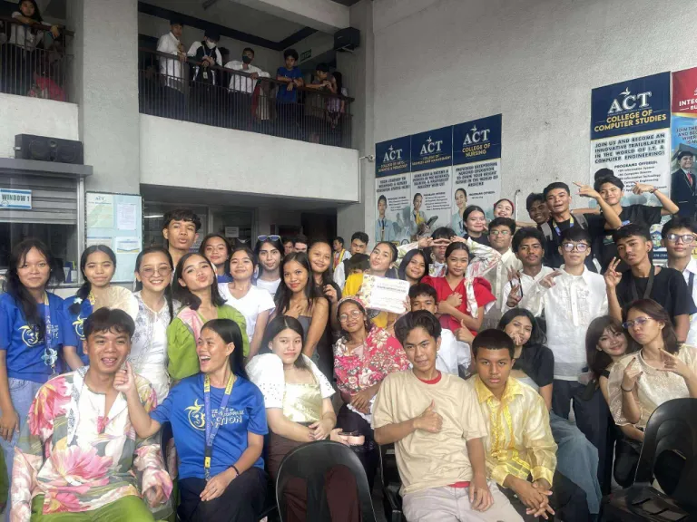
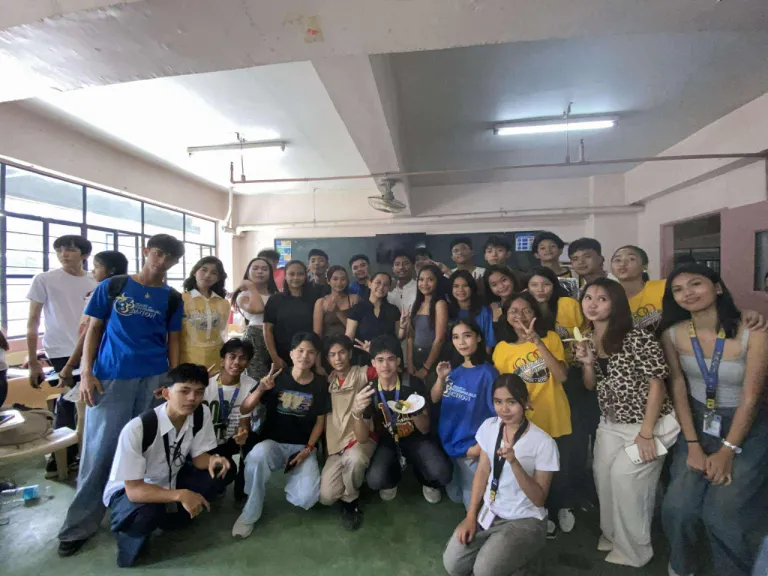

I transferred to ACT during my senior years. It was hard to adjust to a new environment and meet new people, but I managed to make friends and adapt. All of my classmates were nice, and our motto was to graduate together. Since they were my classmates for two years, our bond grew stronger each day.

The photo above was taken during our Teachers’ Day. Those days were truly enjoyable and fun. The day went by so fast because of the time we spent with our most wonderful teacher. She was very relatable, caring, and always motivated everyone every day.

This photo was taken during Buwan ng Wika. We had a dance competition, and after our performance, we took this photo. The dance was incredible, and we worked hard on it because we wanted to impress everyone on campus. We didn’t become champions, but we still got first place, and we were happy with that.

This photo was taken before our graduation day. It is one of the most cherished photos I have because these people were with me for two years. Our teacher was always there for us, and we overcame many situations together, including topics, quizzes, exams, reporting, research, and all the challenges we faced. These people were always by my side, and even during the most difficult moments, we still had each other’s backs. We made many happy memories together, and the bond, friendship, and moments we shared will always be very memorable.